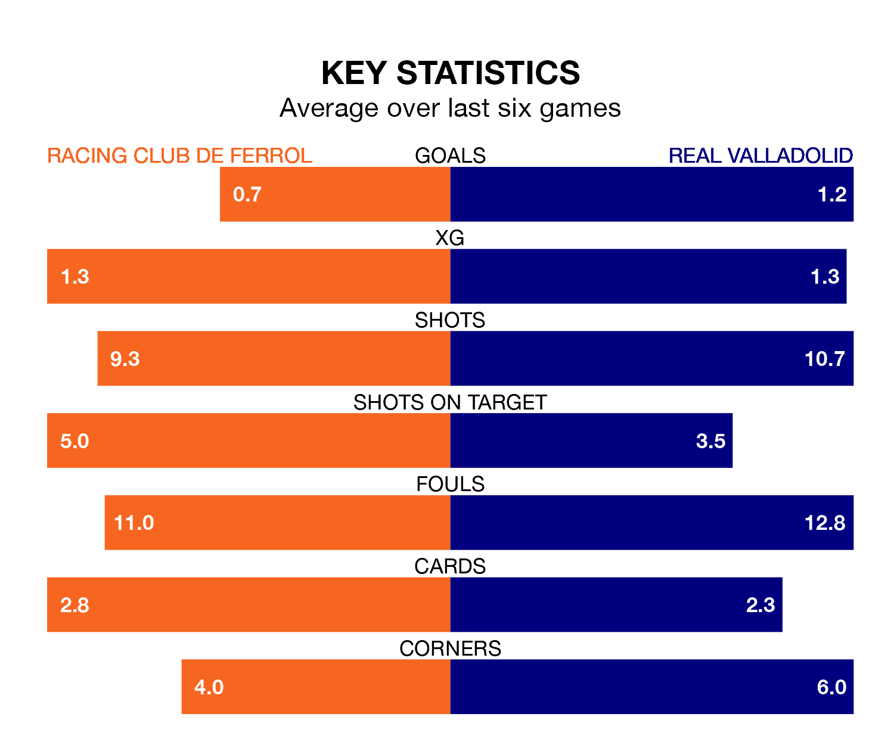

Racing Club de Ferrol face Real Valladolid on Sunday looking to secure a first win in seven Segunda División games.
Racing have lost three and drawn three matches since they last earned three points – against Sporting Gijón on January 28.
They face a Valladolid side who have won two and drawn three over that time.
With 36 goals in 30 games so far this season, Racing are scoring more than average in the league with 1.2 goals per game. But they are conceding more than average too, letting in 36 goals at a rate of 1.2 per game.
Valladolid are also above average scorers, with 1.2 goals per game, compared to a league average of 1.1. They have conceded 0.9 goals per game.
The away side are fifth in the table after 30 games, of which they have won 14 and drawn six, earning 48 points.
Ferrol are five places behind Valladolid in 10th, with 11 wins and 11 draws putting them on 44 points.
The hosts' Iker Losada Aragunde is among the league's most creative players, racking up seven assists in 30 appearances so far this season, and holding second spot in the Segunda División's assist charts.
For Valladolid, Stanko Jurić has set up the most goals, having laid on five assists in 28 games.
Racing's last match was on March 9, a 2-1 loss against FC Cartagena, with Óscar Francisco García Quintela getting the goal for Racing.
Valladolid beat Real Zaragoza 2-0 last time out, also on March 9, with Amath Ndiaye Diedhiou on the scoresheet.
Sunday's match will be refereed by Luis Mario Milla Alvéndiz, who has taken charge of 15 Segunda División games so far this season, issuing two red cards and booking 86 players. He has awarded four penalties.
The last Racing game Milla Alvéndiz refereed was a 1-1 home draw with SD Eibar on February 4. He is yet to oversee a match featuring Valladolid this season.
Updated: 15:10 (UTC), 15/03/24